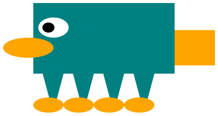

Manda Tran
Discussed the definition of distributed cognition as the mind not being limited to the individual. It includes utilizing resources from the environment (artifacts and other people). Distributed Cognition counters the traditional view that the mind is contained in the body. This article can be found here.
Chinese Room
As an example of distributed cognition we researched the Chinese Room experiment. Information about this can be found here.
Broca’s Region is much more than just the language processing area of the brain. It also deals with language comprehension and even muscle movements. One of the things that I found particularly interesting was the Shadow Puppets and Broca’s Region experiment in which people studied fMRI scans of people viewing shadow puppets. This showed that Broca’s Region was active, and probably has to do with human gesturing being included in a form of communication and the fact that mirror neurons have been found in Broca’s Region.
Coach divide your team into two equal-sized teams
Coach choose two kata cards of equal difficulty
Coach hand write the contents of the back of [both-challenge-cards] on the bottom half of [both-whiteboards]
UNTIL all teams are done DOTeam put a box around the #lang line
Team put a box around all definitions
Team put a box around all top-level expressions
Team circle all key-words
Team write the total number of key words
Team put a dot at the beginning of all parenthesized expressions
Team write up the total number of expressions
Team above each expression dot, write the expression’s nesting depth
CoachIF [Team] made errorsgive a hint to [Team]
ELSEannounce "team is finished"
Coach congratulate the winning team
Talked about the differences between startups and big companies as well as useful skills to have in the industry (referenced ThoughSTEM Assessments Handbook). Also discussed a variety of languages and programming paradigms.
Worked on and completed out New Tactic developed in Day 4.
#lang racket (require pict) (apply cc-superimpose (map (curry rotate (ellipse 40 80))(range 0 120 10)))
#lang racket (require pict) (define nums (range 20)) (define bools (map even? nums)) (define (bools->color b) (if b "salmon" "midnight blue")) (define colors (map bools->color bools)) colors
#lang racket (require pict) (define nums (range 20)) (define bools (map even? nums)) (define (bools->color b) (if b "salmon" "midnight blue")) (define colors (map bools->color bools)) (map (curry colorize (angel-wing 20 40 #f)) colors)
Platypus example

(define body (rectangle 140 70 "solid" "teal")) (define beak (ellipse 50 20 "solid" "orange")) (define front-feet (overlay/align "right" "bottom" (ellipse 30 15 "solid" "orange") (rotate 180 (isosceles-triangle 40 30 "solid" "teal")))) (define eyes (overlay/offset (ellipse 12 10 "solid" "black") 5 0 (ellipse 30 20 "solid" "white"))) (define tail (rectangle 70 35 "solid" "orange")) (define platypus (underlay/offset tail -90 10(overlay/offset beak 75 10 (overlay/offset eyes 50 30 (above/align "left" body (beside front-feet front-feet front-feet front-feet)))))) platypus
;#lang fundamentals (above(star 40 "solid" "yellow") (triangle 50 "solid" "green") (triangle 100 "solid" "green") (triangle 150 "solid" "green"))
;#lang fundamentals (define cheese (rotate 45 (triangle 300 "solid" "yellow"))) (define holes (ellipse 45 30 "solid" "gold")) (overlay/offset holes 20 75 (overlay/offset holes 27 15 (overlay/offset holes 100 70(overlay/offset holes 50 50 cheese))))
Started familiarizing self with 2htdp/universe library and creating animations.
Easy: Make a snowman with eyes and arms.
(define head (circle 20 "solid" "blue")) (define torso (circle 40 "solid" "blue")) (define lower-body (circle 60 "solid" "blue")) (define eyes (overlay (circle 3 "solid" "black") (circle 5 "solid" "white"))) (define face (overlay/offset eyes -10 5 (overlay/offset eyes 10 5 head))) (define left-arm (rotate 45 (rectangle 3 60 "solid" "brown"))) (define right-arm (flip-vertical left-arm)) (define upper-body (overlay/offset left-arm 65 15 (overlay/offset right-arm -50 15 torso))) (define detailed-snowman (above face upper-body lower-body))
Medium: Make a snowman that moves to the left
(define snowman (above (circle 20 "solid" "blue") (circle 40 "solid" "blue") (circle 60 "solid" "blue"))) (define (draw-shape num) (underlay/offset (rectangle 800 200 "solid" "white") (- 400 num) 20 snowman)) (define (fast-move num) (+ num 5)) (big-bang 0 (on-tick fast-move) (to-draw draw-shape))
Hard: Make a snowman that jumps up and down and fades to blue.
(define (head num) (circle 20 "solid" (fade-color num))) (define (torso num) (circle 40 "solid" (fade-color num))) (define (lower-body num) (circle 60 "solid" (fade-color num))) (define eyes (overlay (circle 3 "solid" "black") (circle 5 "solid" "white"))) (define (face num) (overlay/offset eyes -10 5 (overlay/offset eyes 10 5 (head num)))) (define left-arm (rotate 45 (rectangle 3 60 "solid" "brown"))) (define right-arm (flip-vertical left-arm)) (define (upper-body num) (overlay/offset left-arm 65 15 (overlay/offset right-arm -50 15 (torso num)))) (define (detailed-snowman num) (above (face num) (upper-body num) (lower-body num))) (define bg (rectangle 300 600 "solid" "white")) (define (draw-shape num) (underlay/offset bg 0 (jumping num) (detailed-snowman num))) (define (fast-move num) (+ num 5)) (define (jumping num) (+ (* 150 (sin (/ num 20))) 20)) (define (fade-color num) (if (< num 255) (make-color 0 0 (+ num)) (make-color 0 0 255))) (big-bang 0 (on-tick fast-move) (to-draw draw-shape))
Discussed coding interviews and "Cracking the Coding Interview" questions.
;#lang vr-lang (define body (h:rectangle 140 70 "solid" "teal")) (define beak (h:ellipse 50 20 "solid" "orange")) (define front-feet (h:overlay/align "right" "bottom" (h:ellipse 30 15 "solid" "orange") (h:rotate 180 (h:isosceles-triangle 40 30 "solid" "teal")))) (define eyes (h:overlay/offset (h:ellipse 12 10 "solid" "black") 5 0 (h:ellipse 30 20 "solid" "white"))) (define tail (h:rectangle 70 35 "solid" "orange")) (define platypus (h:underlay/offset tail -90 10(h:overlay/offset beak 75 10 (h:overlay/offset eyes 50 30 (h:above/align "left" body (h:beside front-feet front-feet front-feet front-feet)))))) ;Here we declare the star-system component (register-remote-component star-system "https://cdn.rawgit.com/matthewbryancurtis/aframe-star-system-component/db4f1030/index.js") (define (my-box n) (box (position -1 n -3) (rotation 0 (* n 10) 0) (color 76 195 (* n 50) 255))) (define my-scene (scene (map my-box (range 10)) (basic (star-system (hash "count" 1000 "radius" 40 "depth" 0 "starSize" 2 "texture" platypus))) (sky (color 0 0 0 0)))) (send-to-browser my-scene)
#lang racket (define (sum list1 list2) (if (or (empty? list1) (empty? list2)) '() (cons (+ (first list1) (first list2)) (sum (rest list1) (rest list2)))))
#lang racket (define (findNode list1 list2) (if (or (empty? list1) (empty? list2)) null (cond [(= (length list1) (length list2)) (if (eq? list1 list2) (first list1) (findNode (rest list1) (rest list2)))] [(> (length list1) (length list2)) (if (eq? list1 list2) (first list1) (findNode (rest list1) list2))] [(< (length list1) (length list2)) (if (eq? list1 list2) (first list1) (findNode list1 (rest list2)))])))
Also attempted to create a VR snowman
;#lang vr-lang (define (my-snowman n) (sphere (position -1 (- (* n 2.5) 2) -6) (color 255 255 255 255) (radius (- 3 (* 0.50 n))))) (define my-scene (scene (my-snowman 1) (my-snowman 2) (my-snowman 3) (sky (color 102 178 255 170)))) (send-to-browser my-scene)
Add vr-lang katas to the Kata-Collections and Languages.
Problem 1: Add up all the multiples of 3 in some number N.
First Solution:
(define (sum-3s N) (if (< N 0) 0 (if (= (modulo N 3) 0) (+ N (sum-3s (sub1 N))) (sum-3s (sub1 N)))))
Second (Better) Solution:
(define (sum-3s N) (define temp (floor (/ N 3))) (/ (* temp (+ (* temp 3) 3)) 2))
Problem 2: Find the nth Fibonacci number.
First Solution:
(define (fibonacci n) (if (< n 2) n (+ (fibonacci (- n 2)) (fibonacci (sub1 n)))))
Second Solution: In Java, use a while loop and two variables to keep track of the previous numbers.
Also worked on some more vr-katas.
Example 1 Create a scene with a snowman, a tree, and a blue background with snow.
;#lang vr-lang ;Here we declare the star-system component (register-remote-component star-system "https://cdn.rawgit.com/matthewbryancurtis/aframe-star-system-component/db4f1030/index.js") (define (my-snowman n) (sphere (position -2 (- (* n 2.5) 2) -12) (color 255 255 255 255) (radius (- 3 (* 0.50 n))))) (define (my-tree n) (cone (position -16 (- (* n 4) 2) -16) (color 0 255 0 255) (radius-bottom (- 4 (* 0.50 n))) (height 6))) (define (my-trunk) (cylinder (position -16 -1 -16) (color 153 76 0) (radius 1) (height 4))) (define my-scene (scene (my-snowman 1) (my-snowman 2) (my-snowman 3) (my-tree 1) (my-tree 2) (my-tree 3) (my-trunk) (basic (star-system (hash "count" 1000 "radius" 40 "depth" 0 "texture" (h:circle 10 "solid" "white")))) ;Note the h: prefix on 2htdp/image functions (sky (color 102 178 255 170)))) (send-to-browser my-scene)